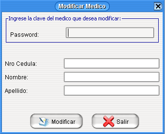

Para
Para modificar los datos de un Médico, precionamos click en el menú
Médico, este nos despliega un menú y elegimos la opción
Modificar Médico o sino precionamos las teclas Ctrl + M

Para
Para Eliminar los datos de un Médico, precionamos click en el menú
Médico, este nos despliega un menú y elegimos la opción
Eliminar Médico o sino precionamos las teclas Ctrl + E